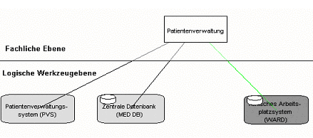
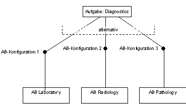
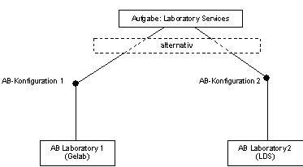
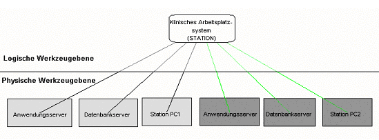

Inter-layer relationships between static components
As we have already seen at one point or another, the three layers do not exist independently of each other. The manifold relations between the layers are called inter-layer relations. In the class diagrams of the layers they are visible as dotted classes and association relations. We can find relations between the domain layer and the logical tool layer as well as between the logical and the physical tool layer.
Relations between the domain layer and the logical tool layer
Function - Application component
Within a hospital a function can be supported by
- several application components together,
- by a single application component,
- by combinations of these.
This fact is expressed in the application component configuration.
The application component configurations can be determined as follows:
- Which application components are required together to support the function?
An application component configuration thus contains all the application components that are directly required to support the function. Directly refers to the pure functionality, not to the delivery of data. If you remove an application component from a configuration, the function is no longer supported.
- What are the possible alternatives for supporting the function?
A function can be supported by several application component configurations. If you remove an application component configuration, the function can still be completed by one of the remaining ones, possibly with quality restrictions. If this is not the case, this may be an indication that the modeling at the business layer was not adequate (e.g. not fine enough).
Fig. 1 shows an example of an application component configuration.

Fig. 1: Application component configurations (example)
Application component configurations can give hints on redundancies on the logical tool layer, but also hints on weaknesses in the model of the domain-oriented layer. This is discussed again in the following notes. Fig. 12 shows an example for application component configurations. The function PATIENT RECEPTION is supported by two application component configurations. The light gray one consists of the PVS - which does not contain its own database - and MED DB which contains the central database where the recording data is stored. Thus, the function PATIENT RECORDING can only be executed if both application components, PVS and MED DB, are available. The dark gray application component configuration consists of exactly one application component, which is sufficient to support the PATIENT ADMINISTRATION function.
Notes on the concept of application component configurations: In the following Fig. 2 it initially looks as if AC Laboratory could replace AC Radiology. That this is not the case is obvious. So there is a modeling problem. There are two possibilities to solve this problem:
- On the professional layer, we refine the function diagnostics in laboratory diagnostics, radiology diagnostics and pathological diagnostics. Each of these functions is then assigned to the corresponding application component.
- On the logical tool layer, we coarsen and combine the application components for diagnostics into one application component.
- A third option is to introduce organizational units, as done in the current version of the meta model. If these are taken into account later when assigning the application component configurations - as suggested in the meta model - this problem can be avoided.
This makes it easy to realize that the use of application component configurations is in principle equivalent to the coarsening and refinement of application components. However, the use of application component configurations is intended to avoid having to introduce 'artificial' application components and one would prefer to model this fact explicitly as another concept.

Fig. 2: Application component configurations with reference to inadequate modeling
On the other hand, if you have a function that is actually alternatively supported by two application components (see Fig. 3), you will have to consider the following:
- Is it really the same function?
- Are the alternatives really necessary (for example, because of external circumstances, or because one of the application components supports an additional function)?

Fig. 3: Application component Configurations Alternatives
In the example in Fig. 3, we see the function Laboratory Services alternatively supported by two application components, which are also based on two different software products (the software products are indicated in brackets). However, it is quite possible that one of the application components is also used in teaching, i.e. supports another function. But then we have to ask ourselves if at least some of the application components based on the same software product should be used.
Another example is the function Scheduling. It is true that there is appointment planning both in surgery planning and in a radiology department. However, the corresponding application components cannot replace each other. Obviously, the function Scheduling must therefore be refined or be understood as a subfunction of the functions Surgery Planning and Radiology Services. However, if one moves away from department-oriented thinking towards service-oriented thinking, there may actually be a generic Scheduling service that works differently depending on where it is used.
There are some other important inter-layer-relationships between concepts of the domain and the logical tool layer which we will shortly describe in the following:
An object type can be assigned which database system / document collection is master for this object type (relationship has_as_master). Data for this object type may only be inserted, changed or deleted in this 'master database system' / 'master document collection'. All other database systems / document collections that also store data for this object type must use communication between the corresponding application components to synchronize their databases with this database system / document collection when data is changed, added or deleted, otherwise data integrity cannot be guaranteed. This is of course particularly problematic with document collections!
Object types can be represented logically by record types, by document types and by message types. Record types describe which information represented by object types is stored in a database system. Document types describe which information represented as object types is stored in a document collection and which information is transported via a communication link. A message type describes which information is transported in message-based communication.
A software product supports the execution of certain functions. According to a certain parameterization, however, it is possible that an application component based on a certain software product does not support all these functions. This relationship therefore does not describe which functions an application component based on a software product actually supports, but only the potential that a certain software product offers.
Function - Event
Terminating an activity of a function can trigger an event of a certain event type, which in turn controls the sending of a message of a certain message type. This relationship makes it possible to describe message-based communication in particular.
Relationships between logical tool layer and physical tool layer
A computer-based application component can be installed on:
- several physical data processing components together,
- on a single physical data processing component,
- on combinations of these.
This fact is expressed in the data processing component configuration.
The data processing component configurations can be determined as follows:
- Which data processing components are required together to install the application component?
A data processing component configuration thus contains all the data processing components that are required to install the application component. If a data processing component is removed from a configuration, the application component can no longer be used.
- What are the possible alternatives for using an application component?
An application component can be made usable by several data processing component configurations. If one data processing component configuration is removed, the application component can still be used by one of the remaining ones, if necessary with quality restrictions. This is not the case if a data processing component that is included in both configurations fails.

Fig. 4: Data processing component configurations (example)
In our example in Fig. 4 there are two alternative configurations for the WARD application component. If the PDVB WARD PC1 fails, configuration 1 cannot be used, but configuration 2 can be used. If the PDVB DB server fails, no configuration can be used.